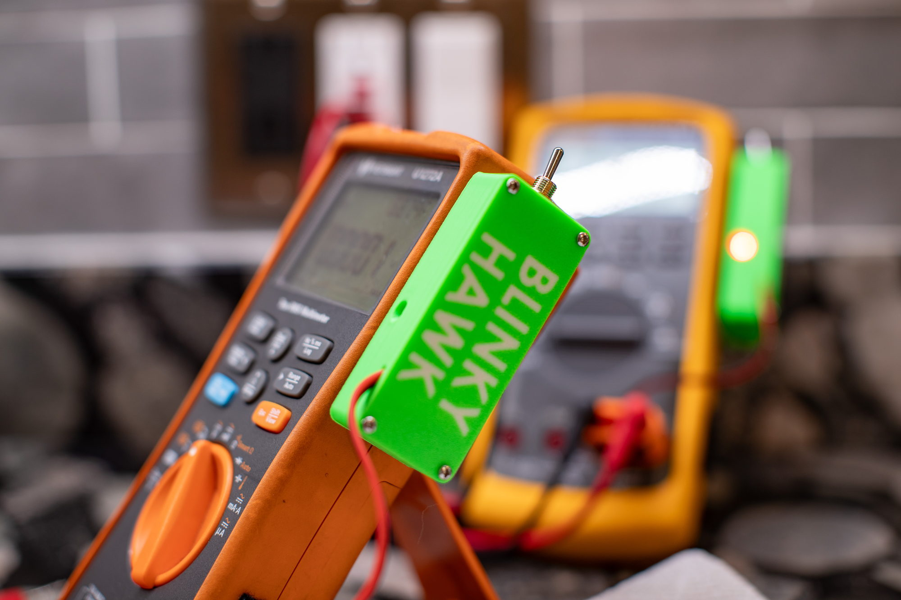
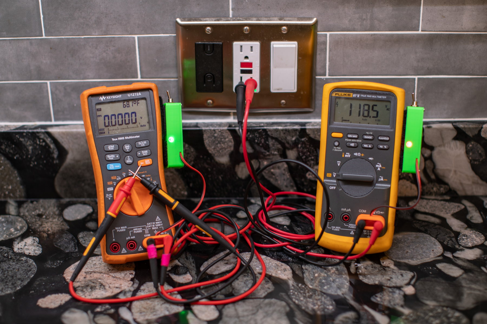
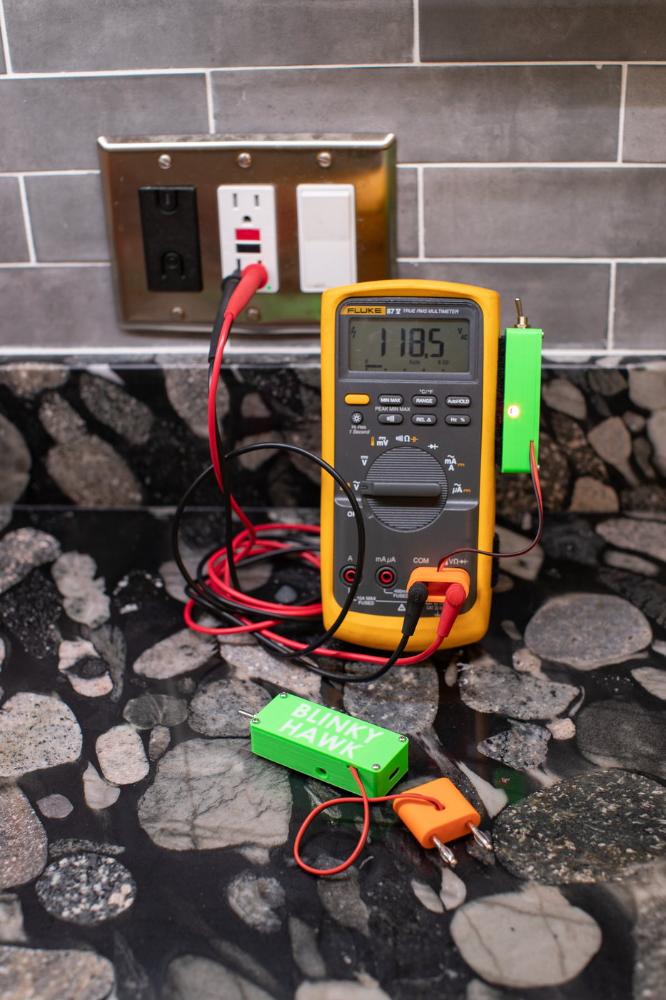
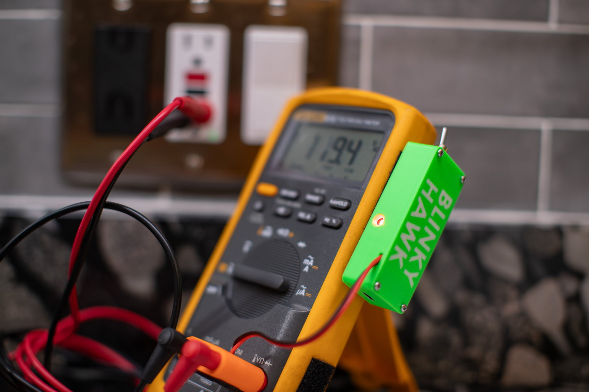
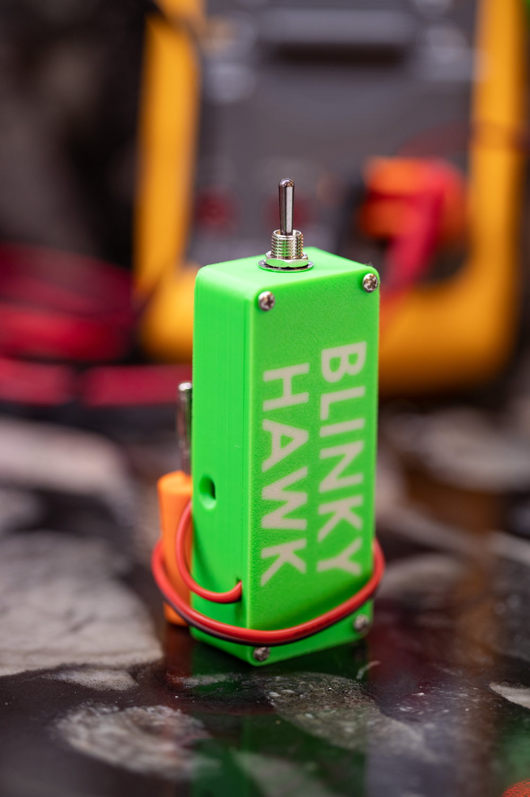
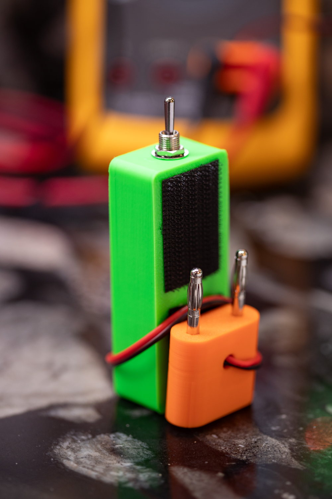
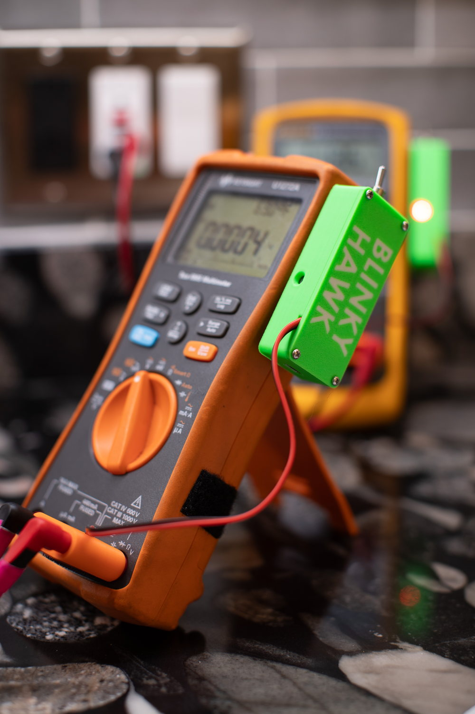
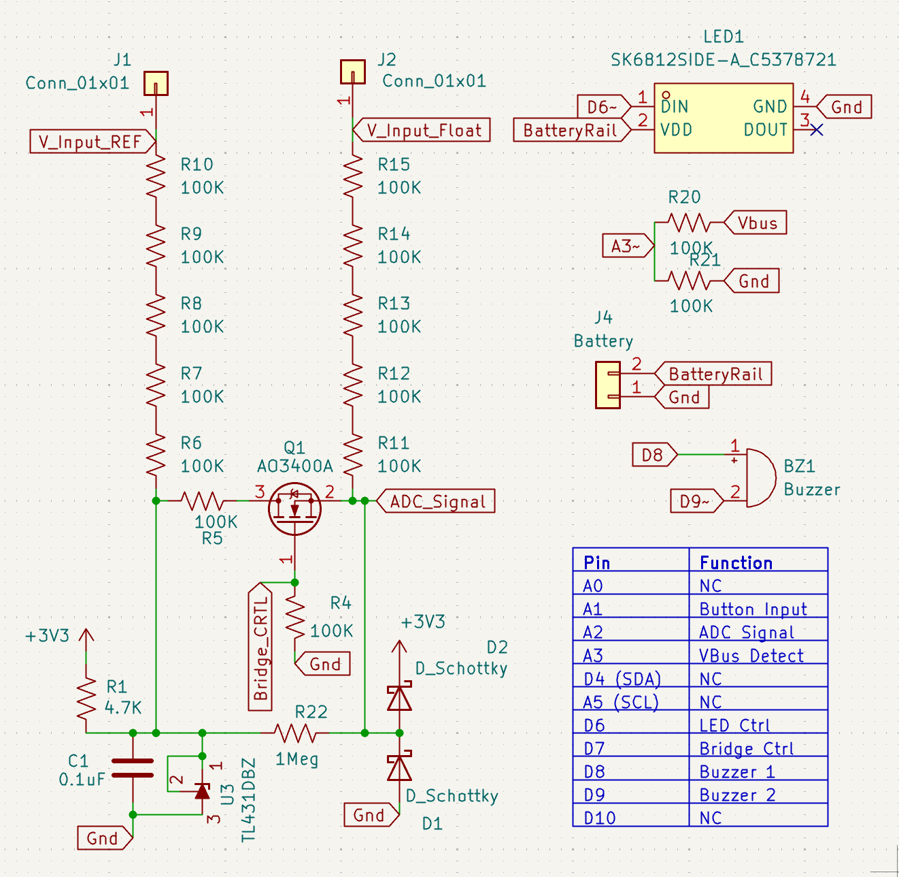
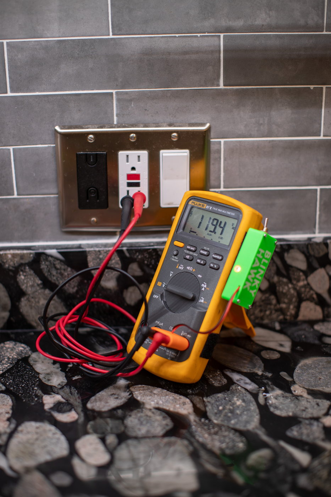
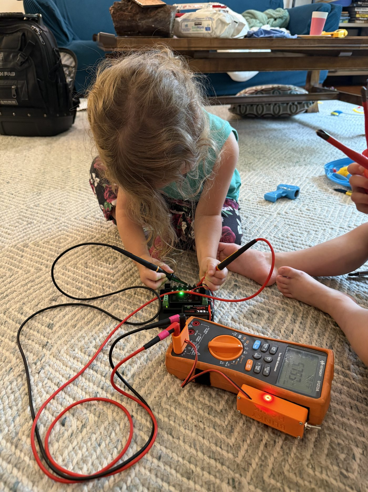

Clip it onto the multimeter you already own. From then on, a 0 V reading always comes with an answer: connected, open lead, or live.
A pocket-sized detector that piggybacks on your meter's voltage inputs. Same probes, same workflow, no mode switching — it watches continuously and tells you with a flash and a beep.

You set your meter to DC Volts, probe two points, and it settles to 0.0000 V. Is that true zero — or are you simply not connected: a floating probe, a clip that fell off, or a measurement across an isolation barrier?
| What's really happening | A normal meter says |
|---|---|
| Probes on the same net (truly connected) | 0 V |
| Probe floating / not contacting anything | 0 V |
Wasted troubleshooting time chasing a “dead” circuit that was never really probed.
You trust a “0 V” that is really a floating probe — and reach into a circuit that is actually live.
The ohms-mode dance: power down → switch to Ω → read → switch back → power up. Slow, repetitive, and easy to leave in the wrong mode.
No mode switch. No exposed ohmmeter. No guessing what “0 V” means. It has to clear a short list of hard requirements:
Survives ±1 kV Doesn't disturb the reading No perceptible delay Compact & low power
A self-contained, rechargeable detector with stacking banana plugs. It fits any meter with standard V/COM jacks — your probes plug into the back of it, and nothing about how you work changes.





This is the whole circuit — not a redacted block diagram. The schematic and the firmware source are published, so you can see exactly what is across your probes, and change it if you want to.

| Fits | Any meter with standard banana V/COM jacks — stacking plugs, probes go in the back |
| Tells you | Open leads / closed leads / voltage present, continuously |
| Alerts | RGB LED and buzzer, both configurable (and both defeatable) |
| Working range | Detection verified from 0 V through ±1 kV |
| Effect on your reading | −5 mV of ghost voltage on open leads; nothing once a real voltage is present |
| Battery | 320 mAh internal lithium, USB-C charging, ~100 hours per charge |
| Open | Firmware source and schematics published in the project repo |
| Off means off | The switch disconnects the battery and both leads — your meter reads exactly as it would bare |
| Configuration | Stored on-board, adjustable over USB serial or the desktop app |
Some DMMs — or scripted bench meters — auto-switch to ohmmeter circuitry after a 0 V reading. That's just the user changing modes, automatically. The distinction here is fundamental, not incremental: it never leaves voltmeter mode at all.
| “Smart Mode” auto-switch | This design | |
|---|---|---|
| Speed | Pauses to switch modes | Continuity checked at 20 Hz (up to ~500 Hz) |
| Exposure | Can expose ohmmeter circuitry to live voltage | Never leaves voltmeter mode — nothing fragile exposed |
| Adoption | Buy a whole new DMM | Standalone — clip it onto the meter you already love |
Across the everyday things you probe, a normal meter gives you one ambiguous number. This gives you an answer.
| Probes separated by | Normal meter | This detector |
|---|---|---|
| Copper — same net | 0 V | “Leads Closed” |
| Air gap | 0 V | “Open Leads” |
| Open relay | 0 V | “Open Leads” |
| Diode (unenergized) | 0 V | Function of polarity / type |
| Transformer pri↔sec (unenergized) | 0 V | may read “Closed” (reactive coupling) * |
| Capacitor | 0 V | reads “Closed” while charging * |
| GPIO pin, output low | 0 V | “Leads Closed” |
| GPIO pin, MCU off | 0 V | “Open Leads” |
| Energized impedance | Voltage | Voltage |
* It measures impedance to a fast pulse, not pure DC continuity — so reactive parts can read “Closed” even with no galvanic path.
One honest limitation. Blinky Hawk detects a low-impedance path to a fast injected transient — which, the vast majority of the time, is a genuine wire-to-wire connection. Reactive components are the exception. A capacitor passes the transient and reads like a short that climbs as it charges (short → tens of kΩ → settling around 100 kΩ), so it can trip “Closed.” A transformer, winding-to-winding, couples that transient through its interwinding capacitance: one tested unit read >4 GΩ on a megohmmeter (galvanically wide open) yet still presented a low-impedance path and read “Closed.” So near reactive parts, treat a “Closed” as “low-impedance path,” not “guaranteed DC connection.”


Blinky Hawk breaks a biased divider for an instant and watches how the node settles. The decay rate is the impedance between your probes — which is how it answers the question without ever becoming an ohmmeter.
The full engineering write-up has the circuit, the measured decay curves across every decade from 10 kΩ to open, the injected-signal safety numbers, the two hardware builds, and the open questions I am still chewing on.
The one-page insert that comes in the box: hookup, the switch, what the lights mean, and the safety notes. Printable PDF.
Hookup, indicators, interpreting results, the 100 kΩ test load, battery and charging, safety, and troubleshooting.
Every configuration key, the serial command reference, the low-power mode, and worked recipes for retuning a unit.
The firmware source and the board schematics are published in the project repo, so the unit is completely customizable — change the behavior over USB, or change the code and reflash it yourself.
Open leads, a real connection, and a live circuit — and what the meter shows in each case.
Drop your email below and I'll let you know the moment it's ready.